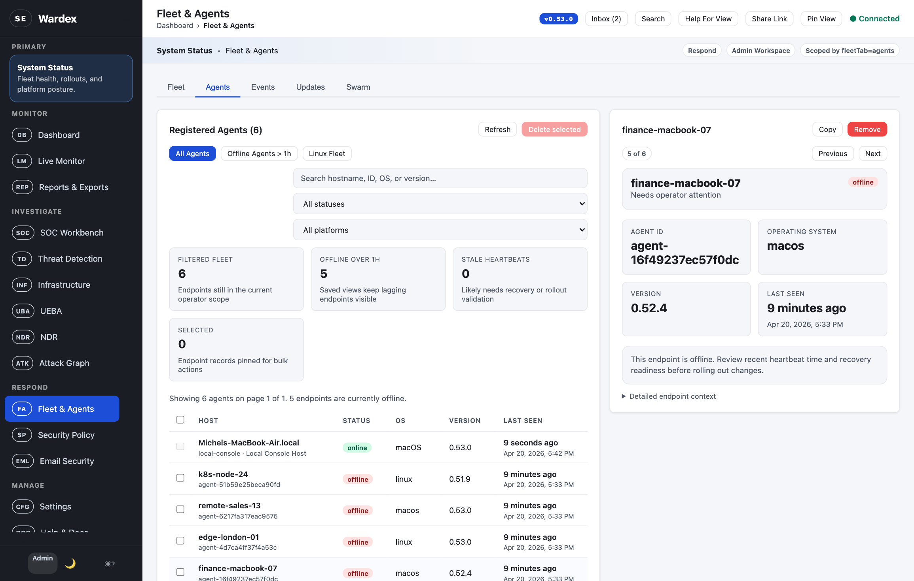
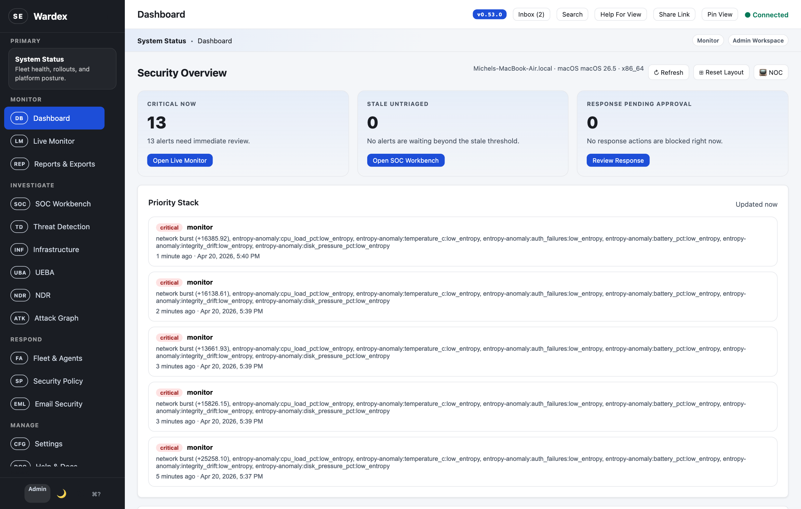
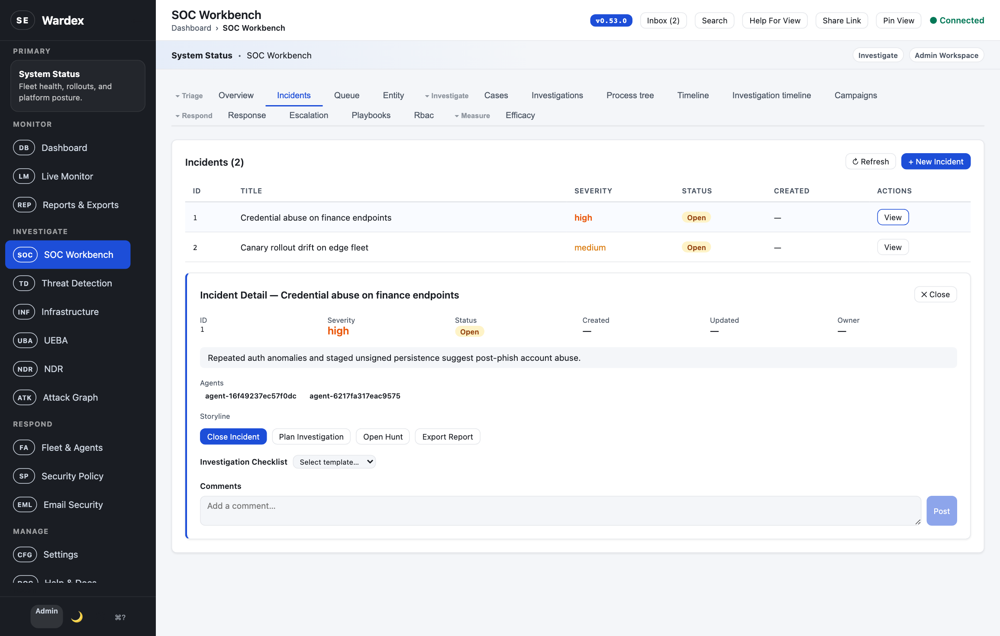
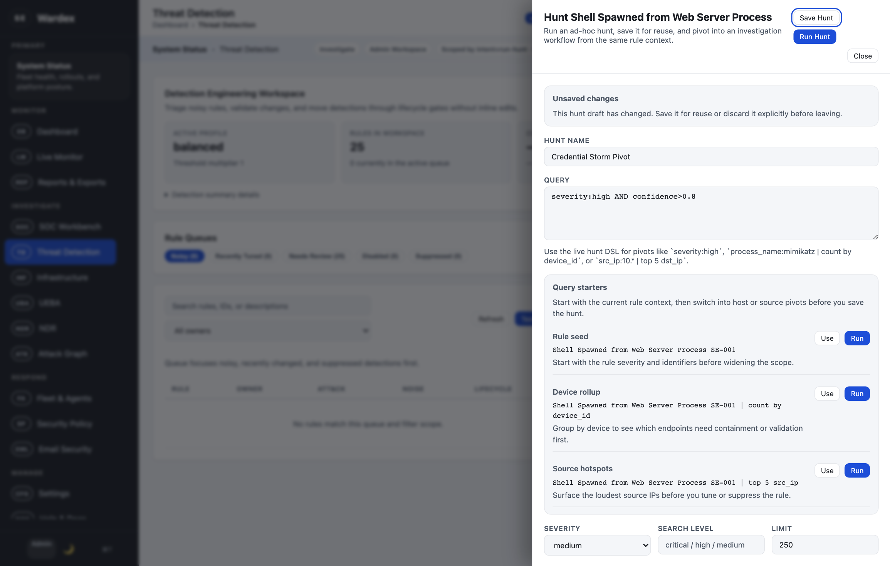

Fleet Operations
Spot version drift and offline endpoints in one sweep.
Version lag, heartbeat gaps, and endpoint detail stay visible without leaving the fleet workspace.

Private-Cloud XDR & SIEM · Built in Rust
Detection, investigation, threat hunting, fleet operations, and governance — delivered as a single signed Rust binary. No cloud dependency. No vendor lock-in. No telemetry egress unless you enable it.
curl -sSf https://github.com/pinkysworld/Wardex/releases/latest | bash
Why Wardex
Wardex is built for security teams that need professional tooling without handing their telemetry to a vendor.
Your telemetry never leaves your infrastructure. Deploy on-prem, in your VPC, or air-gapped. Every integration — SIEM, IdP, threat feeds — is yours to configure or disable.
Rust edition 2024, MSRV 1.88. No runtime to manage, no JVM to patch, no Python toolchain drift. A single reproducible binary serves agents, API, and the browser console.
Every release ships with SLSA build provenance attestations, CycloneDX SBOMs, and cosign-signed container images. CI is SHA-pinned and secret-scanned on every push.
Platform Capabilities
One platform covering the full SOC lifecycle. Every surface is driven by the same data model and permission system.
Adaptive scoring, Sigma rules, YARA scanning, side-channel fusion, and kernel-level event bridging work together out of the box.
Campaign clustering across the fleet, deception canaries, attacker profiling, and memory forensics for proactive investigations.
Queue, cases, SLAs, process trees, timelines, and storyline views keep analysts inside one investigation surface with full context.
SHA-256 baselines for critical system paths with change detection and per-agent snapshots across Linux, macOS, and Windows.
Behavioural baselines with impossible-travel detection catch compromised credentials that static rules miss.
Quarantine, isolate, and remediate with documented approvals, full audit trails, and automatic rollback on failure.
Insights
Captured from a local Wardex v0.53.7 instance with seeded alerts, enrolled endpoints, active incidents, and an in-progress hunt. No static mockups.
One control plane for posture, triage, fleet recovery, and hunt workflows.
Wardex keeps detection, investigation, and endpoint operations inside the same product surface. Analysts do not have to swivel between stitched-together tools to move from an alert to a host, a case, or a hunt.

Fleet Operations
Version lag, heartbeat gaps, and endpoint detail stay visible without leaving the fleet workspace.

Incident Response
Open incidents carry linked agents, narrative context, and next-response actions inside the same SOC workbench.

Threat Hunting
Run an ad hoc hunt, reuse the query, and widen scope from the same detection engineering surface.

By the Numbers
Deploy Anywhere
Ship a single binary with systemd, launchd, or Windows Service integration. Package as Debian and Homebrew artifacts straight from CI, or roll your own Helm chart for Kubernetes.
# Linux (Debian / Ubuntu) $ curl -fsSL https://pinkysworld.github.io/Wardex/apt/pubkey.gpg \ | sudo gpg --dearmor -o /usr/share/keyrings/wardex.gpg $ sudo apt install wardex # macOS $ brew tap pinkysworld/wardex $ brew install wardex # Kubernetes $ helm install wardex ./deploy/helm/wardex ✓ ready to serve
Evaluate Wardex in your own environment today. The source code is open for inspection and non-production use under BSL 1.1.